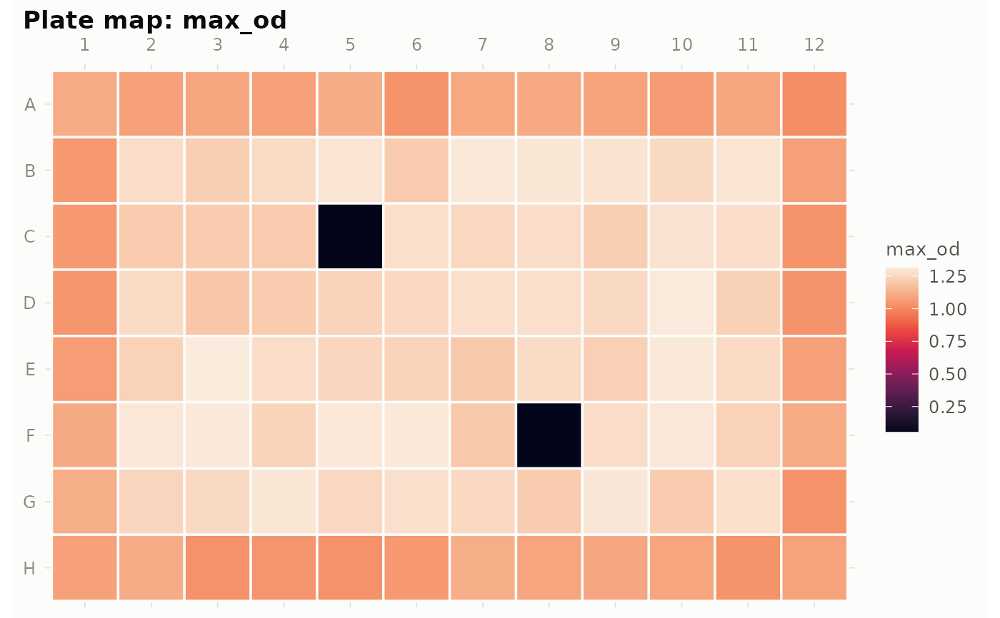
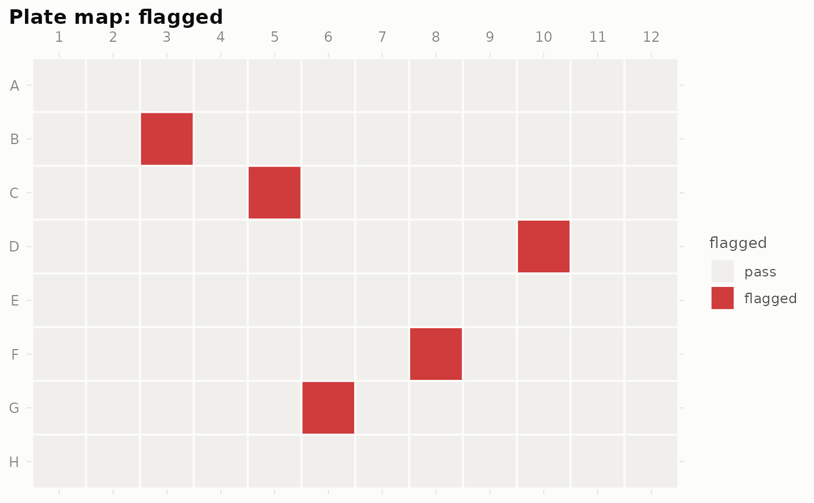

Draws the plate as an 8 x 12 grid (row A at the top, as you look at the plate) with each well coloured by:
Arguments
- plate
A
gr_plateobject.- fill
What to colour wells by (see Details). Default
"max_od".- label
If
TRUE, print the value in each well (rounded for numeric fills). DefaultFALSE.- equalize
For numeric fills: if
TRUE, the ramp's colours are anchored at the data's own quantiles, so wells clustered in a narrow value band separate visibly. Off by default: equalization also exaggerates trivial differences, making a quiet plate look dramatic. The default linear mapping on the perceptually uniform ramp shows equal differences equally.- palette
For numeric fills:
NULL(default) uses the perceptually uniform rocket ramp; a vector of colours is used as a custom ramp; a single string is looked up as a palette name from the ltc package (e.g."heatmap0","maya"), which must be installed. Note that most named palettes are not perceptually uniform — the default is the safe choice.
Details
a summary statistic —
"max_od"(default),"auc","delta_od","baseline";a QC result —
"flagged"or any individual check name run bygr_qc()(e.g."spike");a growth parameter from
gr_fit()—"r","K","lag","doubling_time","t_rmax","N0","sigma", or"fit_ok";any metadata column added by
gr_layout().
Examples
plate <- gr_read(system.file("extdata", "growth_long.csv", package = "gRate"))
plate <- gr_qc(plate)
gr_plot_plate(plate, "max_od")

gr_plot_plate(plate, "flagged")
